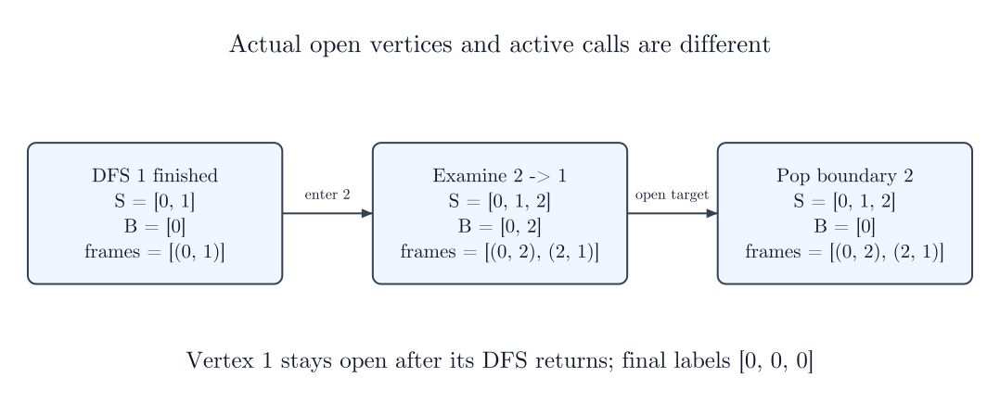
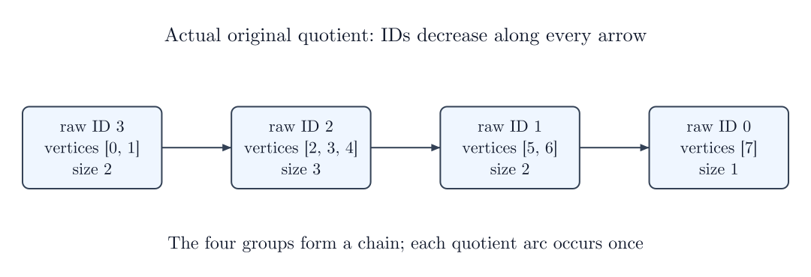
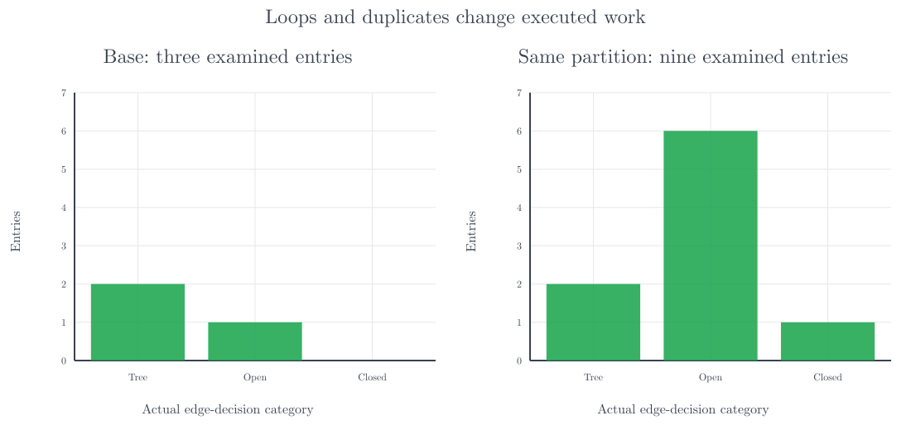
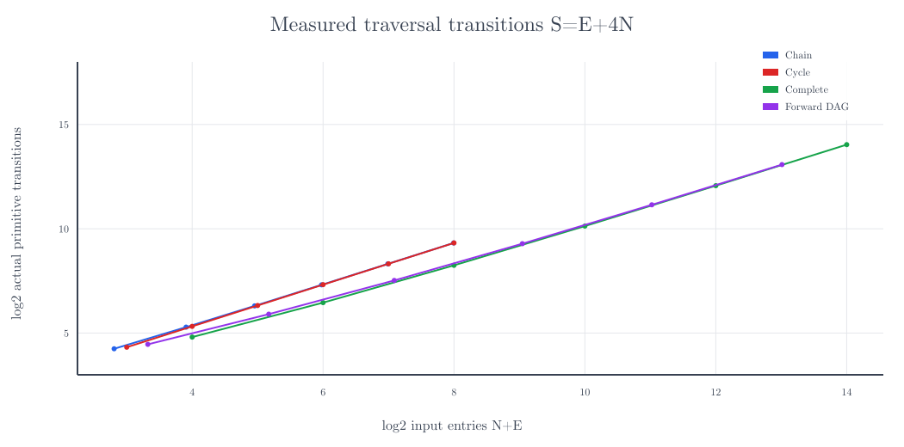
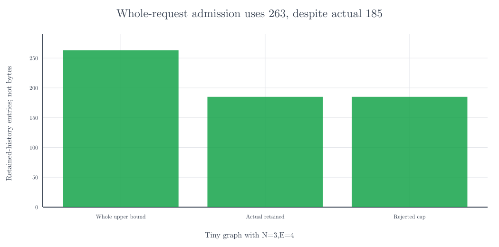

Gabow SCC: open vertices, candidate boundaries and active DFS
Abstract
A directed graph's strongly connected components are its maximal mutually reachable vertex sets. Gabow's path-based algorithm finds them with one DFS, an open-vertex stack and a stack of candidate component boundaries. A three-vertex example exposes the distinction between open vertices and active DFS calls. Native snapshots then preserve the original eight-vertex example, including its raw component IDs, and construct its quotient graph. Controlled neighbor-order, loop and duplicate-edge changes separate partition meaning from labels and traversal work. Independent reachability checks, actual operation counts and conservative owned-history admission make the correctness and resource claims explicit.
A finished DFS call can still be open
Use adjacency rows 0→[1,2], 1→[0], 2→[1], in that order. DFS enters 0, then 1. The edge 1→0 collapses candidate 1 into candidate 0. The call for 1 finishes, but 1 remains unassigned on the open stack S. Later the edge 2→1 reaches that finished-yet-open vertex and merges 2 into the same unfinished component. All three vertices are mutually reachable.
The active DFS frames, S and boundary stack B are different objects. S contains every discovered vertex not yet assigned a component; it can retain vertices whose calls have returned. B contains the surviving candidate roots. The following diagram reads actual snapshots from one execution, without replay.
#include <dm/dm.hpp>
namespace dm=datamunge;
int main(){
std::filesystem::create_directories("build");
const dm::algorithms::SccAdjacency graph{{1,2},{0},{1}};
const auto t=dm::algorithms::gabow_scc_trace(3,graph,263);
std::print("| event | kind | u | target or assigned v | open S | boundaries B | active (vertex,next) |\n| ---: | --- | ---: | ---: | --- | --- | --- |\n");
for(std::size_t i=0;i<t.events.size();++i){const auto& e=t.events[i];std::print("| {} | {} | {} | {} | {} | {} | {} |\n",i,e.kind,e.u,e.v,e.path,e.roots,e.stack);}
std::print("\nRaw labels {}; components {}; actual transitions {}; peak DFS {}; peak open S {}; peak B {}; actual retained entries {}.\n",t.components,t.work.component_closures,t.work.event_count,t.work.peak_dfs,t.work.peak_open,t.work.peak_roots,t.captured_entries);
const auto finished=std::find_if(t.events.begin(),t.events.end(),[](const auto& e){return e.kind=="finish"&&e.u==1;});
const auto cross=std::find_if(t.events.begin(),t.events.end(),[](const auto& e){return e.kind=="edge"&&e.u==2&&e.v==1;});
const auto merged=std::find_if(t.events.begin(),t.events.end(),[](const auto& e){return e.kind=="collapse"&&e.u==2&&e.v==1;});
if(finished==t.events.end()||cross==t.events.end()||merged==t.events.end())throw std::runtime_error("missing actual transition");
dm::graphics::Diagram d(61,1100);dm::graphics::DiagramNodeStyle box;box.width=4.5;box.height=2.5;box.font_size=21;
d.node("finished",{0,0},std::format("DFS 1 finished\nS = {}\nB = {}\nframes = {}",finished->path,finished->roots,finished->stack),box)
.node("edge",{6.1,0},std::format("Examine 2 -> 1\nS = {}\nB = {}\nframes = {}",cross->path,cross->roots,cross->stack),box)
.node("merge",{12.2,0},std::format("Pop boundary 2\nS = {}\nB = {}\nframes = {}",merged->path,merged->roots,merged->stack),box)
.edge("finished","edge","enter 2").edge("edge","merge","open target")
.text({6.1,3},"Actual open vertices and active calls are different",27)
.text({6.1,-2.6},std::format("Vertex 1 stays open after its DFS returns; final labels {}",t.components),25)
.save_svg("build/gabow_tiny.svg");
if(t.components!=std::vector<int>{0,0,0}||t.work.peak_open!=3||t.work.peak_dfs!=2)throw std::runtime_error("finished-open control");
}| event | kind | u | target or assigned v | open S | boundaries B | active (vertex,next) |
|---|---|---|---|---|---|---|
| 0 | enter | 0 | -1 | [0] | [0] | [(0, 0)] |
| 1 | edge | 0 | 1 | [0] | [0] | [(0, 1)] |
| 2 | enter | 1 | -1 | [0, 1] | [0, 1] | [(0, 1), (1, 0)] |
| 3 | edge | 1 | 0 | [0, 1] | [0, 1] | [(0, 1), (1, 1)] |
| 4 | collapse | 1 | 0 | [0, 1] | [0] | [(0, 1), (1, 1)] |
| 5 | finish | 1 | -1 | [0, 1] | [0] | [(0, 1)] |
| 6 | edge | 0 | 2 | [0, 1] | [0] | [(0, 2)] |
| 7 | enter | 2 | -1 | [0, 1, 2] | [0, 2] | [(0, 2), (2, 0)] |
| 8 | edge | 2 | 1 | [0, 1, 2] | [0, 2] | [(0, 2), (2, 1)] |
| 9 | collapse | 2 | 1 | [0, 1, 2] | [0] | [(0, 2), (2, 1)] |
| 10 | finish | 2 | -1 | [0, 1, 2] | [0] | [(0, 2)] |
| 11 | close-root | 0 | -1 | [0, 1, 2] | [] | [(0, 2)] |
| 12 | assign | 0 | 2 | [0, 1] | [] | [(0, 2)] |
| 13 | assign | 0 | 1 | [0] | [] | [(0, 2)] |
| 14 | assign | 0 | 0 | [] | [] | [(0, 2)] |
| 15 | finish | 0 | -1 | [] | [] | [] |
Raw labels [0, 0, 0]; components 1; actual transitions 16; peak DFS 2; peak open S 3; peak B 2; actual retained entries 185.

The trace's edge event occurs after advancing the current neighbor index and before acting on the target. A collapse event follows one boundary pop. An assignment event follows one S pop and component write; component-counter increment follows the last assignment of that component. These primitive snapshots expose intermediate states, so not every boundary invariant is intended to hold halfway through a closure. A target field of -1 is unused for enter, close-root and finish events.
Why the boundaries identify strong components
Assign discovery numbers pre(v) in DFS visit order. Every newly discovered vertex is pushed onto S and B. If an examined target v is already discovered and unassigned, remove candidate roots while
The boundary candidates mark consecutive blocks of open vertices. Such blocks represent vertices already contracted together by discovered return paths. They form a path in the contracted graph, rather than necessarily the active DFS path in the original graph. An edge to an open earlier block joins a cycle of those contracted blocks, so intervening boundaries disappear. An edge to an assigned component cannot reopen it.
When u finishes its adjacency and remains the top candidate, pop its boundary and assign the suffix of S through u as one component. All its outgoing possibilities have been processed, so this is the next sink of the remaining quotient graph. Continuing the search finds every vertex's maximal mutually reachable class. This does not enumerate individual cycles.
Gabow's [2000 paper, Path-based depth-first search for strong and biconnected components](https://doi.org/10.1016/S0020-0190(00)00051-X), Section 2 and Theorem 2.1, printed pages 108–110, develops this contraction view and the stack implementation ([full journal paper](https://www.cs.princeton.edu/courses/archive/spr03/cs423/download/path_based_dfs.pdf)). The native code already used an explicit heap DFS. It stores candidate vertex IDs with monotonic preorder values and a separate component array; the paper uses stack-index boundaries and a combined index/component array.
Each vertex enters and leaves each stack once. Each adjacency entry is examined once. A single edge may pop many boundaries, but at most N boundaries are popped over the whole run. Thus traversal takes O(N+E) time with O(N) auxiliary state, excluding the given adjacency and returned labels. This is an amortized argument; the original report's “one comparison per edge” claim was too strong. Captured full-state history has additional costs, discussed below.
Preserve the original eight-vertex graph
The native fixture has cycles 0↔1,2→3→4→2,5↔6 and the sink 7, linked by 1→2,4→5,6→7. Raw component IDs close in order 0,1,2,3 and therefore run opposite the graph's source-to-sink direction. Every cross-component arc u→v satisfies id[u]>id[v]. That strict decrease also proves that the quotient is acyclic. The quotient's dense row indices follow ascending raw labels; raw labels and dense quotient indices are conceptually distinct.
The summary helper groups vertices and sorts/deduplicates quotient arcs. Its map and sort work is separate from the linear SCC kernel. It summarizes supplied labels; it does not independently prove that an arbitrary labeling is a valid SCC decomposition.
#include <dm/dm.hpp>
namespace dm=datamunge;
int main(){
std::filesystem::create_directories("build");
const auto graph=dm::algorithms::gabow_scc_example_graph();
const auto t=dm::algorithms::gabow_scc_trace(8,graph);
const auto kosaraju=dm::algorithms::kosaraju_scc(8,graph);
const auto q=dm::algorithms::scc_summary(graph,t.components);
const bool agrees=dm::algorithms::scc_same_partition(t.components,kosaraju);
std::print("Original labels {}; components {}; Kosaraju agrees {}; raw internal edges {}; raw cross edges {}; unique quotient arcs {}; reverse topological {}.\n",t.components,q.groups.size(),agrees,q.internal_edges,q.cross_edges,q.unique_cross_edges,q.reverse_topological);
std::print("\n| raw component ID | original vertices | size | quotient neighbor indices |\n| ---: | --- | ---: | --- |\n");
for(std::size_t i=0;i<q.groups.size();++i)std::print("| {} | {} | {} | {} |\n",q.groups[i].label,q.groups[i].vertices,q.groups[i].vertices.size(),q.adjacency[i]);
const auto& w=t.work;
std::print("\nActual work: {} visits; {} examined edges; tree {}; open {}; closed {}; boundary collapses {}; closures {}; events {}; retained entries {}.\n",w.visited_vertices,w.edges_examined,w.tree_edges,w.open_edges,w.closed_edges,w.root_collapses,w.component_closures,w.event_count,t.captured_entries);
dm::graphics::Diagram d(58,1100);dm::graphics::DiagramNodeStyle node;node.width=3.2;node.height=1.7;node.font_size=22;
for(std::size_t i=0;i<q.groups.size();++i){const auto& g=q.groups[i];d.node(std::to_string(i),{4.8*double(q.groups.size()-1-i),0},std::format("raw ID {}\nvertices {}\nsize {}",g.label,g.vertices,g.vertices.size()),node);}
for(std::size_t u=0;u<q.adjacency.size();++u)for(int v:q.adjacency[u])d.edge(std::to_string(u),std::to_string(v),"");
d.text({7.2,2.6},"Actual original quotient: IDs decrease along every arrow",26)
.text({7.2,-2.2},"The four groups form a chain; each quotient arc occurs once",24)
.save_svg("build/gabow_original.svg");
if(!agrees||t.components!=std::vector<int>{3,3,2,2,2,1,1,0}||!q.reverse_topological)throw std::runtime_error("original SCC partition");
}Original labels [3, 3, 2, 2, 2, 1, 1, 0]; components 4; Kosaraju agrees true; raw internal edges 7; raw cross edges 3; unique quotient arcs 3; reverse topological true.
| raw component ID | original vertices | size | quotient neighbor indices |
|---|---|---|---|
| 0 | [7] | 1 | [] |
| 1 | [5, 6] | 2 | [0] |
| 2 | [2, 3, 4] | 3 | [1] |
| 3 | [0, 1] | 2 | [2] |
Actual work: 8 visits; 10 examined edges; tree 7; open 3; closed 0; boundary collapses 4; closures 4; events 42; retained entries 1173.

The links1→2,4→5,6→7 are tree edges in this traversal. Their downstream components close before the parent calls return; they do not create an open return path that would merge the groups. The original output's component labels are preserved exactly, while partition comparison correctly ignores label names.
Labels, duplicate entries and what the quotient can certify
Reversing the neighbor order of0→[1,2] changes the closure order of the two unrelated sinks, and hence their raw IDs. The equivalence relation stays the same. Self-loops and duplicate entries also preserve the partition, but each original entry is still examined. An open-edge event means discovered and unassigned; it need not be an edge to an active ancestor.
The summary validates shapes, endpoints and nonnegative labels. Its quotient can still be cyclic when arbitrary supplied labels split a real SCC. It is a presentation tool, not a second SCC algorithm or an independent correctness oracle.
#include <dm/dm.hpp>
namespace dm=datamunge;
int main(){
std::filesystem::create_directories("build");
const dm::algorithms::SccAdjacency a{{1,2},{},{}},b{{2,1},{},{}};
const auto ca=dm::algorithms::gabow_scc(3,a),cb=dm::algorithms::gabow_scc(3,b);
std::print("Neighbor order: first labels {}; reversed labels {}; same partition {}; identical label vectors {}.\n",ca,cb,dm::algorithms::scc_same_partition(ca,cb),ca==cb);
const dm::algorithms::SccAdjacency simple{{1},{0,2},{}},repeated{{1,1,0},{0,0,1,2,2},{2}};
const auto one=dm::algorithms::gabow_scc_work(3,simple);
const auto many=dm::algorithms::gabow_scc_work(3,repeated);
const auto q=dm::algorithms::scc_summary(repeated,many.components);
std::print("Loops and duplicates: base labels {}; changed labels {}; same partition {}; raw internal {}; raw cross {}; unique quotient arcs {}.\n",one.components,many.components,dm::algorithms::scc_same_partition(one.components,many.components),q.internal_edges,q.cross_edges,q.unique_cross_edges);
std::print("\n| input | tree edges | open edges | closed edges | examined entries |\n| --- | ---: | ---: | ---: | ---: |\n");
std::print("| Base | {} | {} | {} | {} |\n",one.work.tree_edges,one.work.open_edges,one.work.closed_edges,one.work.edges_examined);
std::print("| Loops and duplicates | {} | {} | {} | {} |\n",many.work.tree_edges,many.work.open_edges,many.work.closed_edges,many.work.edges_examined);
const auto arbitrary=dm::algorithms::scc_summary({{1},{0}},{0,1});
std::print("\nArbitrary split of a two-vertex cycle: quotient {}; reverse topological {}. The summary does not certify supplied SCC labels.\n",arbitrary.adjacency,arbitrary.reverse_topological);
auto base=dm::graphics::RPlot::barplot({double(one.work.tree_edges),double(one.work.open_edges),double(one.work.closed_edges)},{"Tree","Open","Closed"});
base.title("Base: three examined entries").xlab("Actual edge-decision category").ylab("Entries").y_limits(0,7);
auto changed=dm::graphics::RPlot::barplot({double(many.work.tree_edges),double(many.work.open_edges),double(many.work.closed_edges)},{"Tree","Open","Closed"});
changed.title("Same partition: nine examined entries").xlab("Actual edge-decision category").ylab("Entries").y_limits(0,7);
dm::graphics::RLayout::create(1,2).add(base).add(changed).size(1100,520).title("Loops and duplicates change executed work").fit_panels().save_svg("build/gabow_labels.svg");
if(ca==cb||!dm::algorithms::scc_same_partition(ca,cb)||!dm::algorithms::scc_same_partition(one.components,many.components))throw std::runtime_error("label-independent meaning");
}Neighbor order: first labels [2, 0, 1]; reversed labels [2, 1, 0]; same partition true; identical label vectors false. Loops and duplicates: base labels [1, 1, 0]; changed labels [1, 1, 0]; same partition true; raw internal 7; raw cross 2; unique quotient arcs 1.
| input | tree edges | open edges | closed edges | examined entries |
|---|---|---|---|---|
| Base | 2 | 1 | 0 | 3 |
| Loops and duplicates | 2 | 6 | 1 | 9 |
Arbitrary split of a two-vertex cycle: quotient [[1], [0]]; reverse topological false. The summary does not certify supplied SCC labels.

Measure the amortized traversal work
Actual primitive snapshots occur after N enters, E edge examinations, N boundary pops in total, N vertex assignments and N frame finishes. Their count is exactly
Boundary pops include both open-edge collapses and component-root closures. For N>0, N+E<=S<=4(N+E). This count excludes graph validation, allocation, history copies and summary/rendering work. It is an operation count, not elapsed timing or a cross-library performance ranking.
The next inputs reuse native rooted-tree and complete-directed-edge generators. They compare chains, cycles, complete digraphs without loops and complete forward DAGs. Dense families have quadratic E in N; that does not make a linear-in-input SCC traversal quadratic in the number of stored adjacency entries.
#include <dm/dm.hpp>
namespace dm=datamunge;
int main(){
std::filesystem::create_directories("build");
std::array<std::vector<double>,4> input,work;
const std::array<std::string,4> names{"Chain","Cycle","Complete","Forward DAG"};
std::print("| N | family | E | root pops | collapses | components | actual transitions |\n| ---: | --- | ---: | ---: | ---: | ---: | ---: |\n");
for(int n:std::array<int,6>{4,8,16,32,64,128}){
dm::algorithms::SccAdjacency chain(n),dense(n),dag(n);
for(auto [u,v]:dm::algorithms::rooted_tree_edges(std::size_t(n),1))chain[u].push_back(int(v));
auto cycle=chain;cycle.back().push_back(0);
for(auto [u,v]:dm::algorithms::complete_directed_graph_edges(std::size_t(n))){dense[u].push_back(int(v));if(u<v)dag[u].push_back(int(v));}
const std::array<dm::algorithms::SccAdjacency,4> graphs{chain,cycle,dense,dag};
for(std::size_t k=0;k<graphs.size();++k){
const auto r=dm::algorithms::gabow_scc_work(n,graphs[k]);const auto& w=r.work;
std::print("| {} | {} | {} | {} | {} | {} | {} |\n",n,names[k],w.edges_examined,w.root_pops,w.root_collapses,w.component_closures,w.event_count);
input[k].push_back(std::log2(double(n)+double(w.edges_examined)));work[k].push_back(std::log2(double(w.event_count)));
if(w.event_count!=w.edges_examined+4*std::size_t(n)||w.root_pops!=std::size_t(n))throw std::runtime_error("amortized work identity");
}
}
const auto cycle=dm::algorithms::gabow_scc_trace(8,{{1},{2},{3},{4},{5},{6},{7},{0}});
const auto cascade=std::count_if(cycle.events.begin(),cycle.events.end(),[](const auto& e){return e.kind=="collapse"&&e.u==7&&e.v==0;});
std::print("\nOne edge 7 -> 0 causes {} consecutive boundary pops; total root pops {}; examined edges {}.\n",cascade,cycle.work.root_pops,cycle.work.edges_examined);
auto plot=dm::graphics::RPlot::create();
const std::array<dm::graphics::RGB,4> colors{{{37,99,235},{220,38,38},{22,163,74},{147,51,234}}};
for(std::size_t k=0;k<4;++k)plot.lines(input[k],work[k],names[k],colors[k],2).points(input[k],work[k],"",colors[k],3);
plot.legend({"Chain","Cycle","Complete","Forward DAG"},{{37,99,235},{220,38,38},{22,163,74},{147,51,234}})
.title("Measured traversal transitions S=E+4N").xlab("log2 input entries N+E").ylab("log2 actual primitive transitions").y_limits(3,18).size(1050,520).save_svg("build/gabow_work.svg");
}| N | family | E | root pops | collapses | components | actual transitions |
|---|---|---|---|---|---|---|
| 4 | Chain | 3 | 4 | 0 | 4 | 19 |
| 4 | Cycle | 4 | 4 | 3 | 1 | 20 |
| 4 | Complete | 12 | 4 | 3 | 1 | 28 |
| 4 | Forward DAG | 6 | 4 | 0 | 4 | 22 |
| 8 | Chain | 7 | 8 | 0 | 8 | 39 |
| 8 | Cycle | 8 | 8 | 7 | 1 | 40 |
| 8 | Complete | 56 | 8 | 7 | 1 | 88 |
| 8 | Forward DAG | 28 | 8 | 0 | 8 | 60 |
| 16 | Chain | 15 | 16 | 0 | 16 | 79 |
| 16 | Cycle | 16 | 16 | 15 | 1 | 80 |
| 16 | Complete | 240 | 16 | 15 | 1 | 304 |
| 16 | Forward DAG | 120 | 16 | 0 | 16 | 184 |
| 32 | Chain | 31 | 32 | 0 | 32 | 159 |
| 32 | Cycle | 32 | 32 | 31 | 1 | 160 |
| 32 | Complete | 992 | 32 | 31 | 1 | 1120 |
| 32 | Forward DAG | 496 | 32 | 0 | 32 | 624 |
| 64 | Chain | 63 | 64 | 0 | 64 | 319 |
| 64 | Cycle | 64 | 64 | 63 | 1 | 320 |
| 64 | Complete | 4032 | 64 | 63 | 1 | 4288 |
| 64 | Forward DAG | 2016 | 64 | 0 | 64 | 2272 |
| 128 | Chain | 127 | 128 | 0 | 128 | 639 |
| 128 | Cycle | 128 | 128 | 127 | 1 | 640 |
| 128 | Complete | 16256 | 128 | 127 | 1 | 16768 |
| 128 | Forward DAG | 8128 | 128 | 0 | 128 | 8640 |
One edge 7 -> 0 causes 7 consecutive boundary pops; total root pops 8; examined edges 8.

Whole-request history admission and complete validation
Ordinary and work-only calls keep the current state. A trace owns the original rows and a complete copy of comp, preorder, S, B and active frames at each actual transition. It can therefore require O((N+E)N) copying and retained storage. The history quota counts entries, not bytes or peak RAM.
Input rows and neighbor entries cost N+E. Each snapshot costs one metadata record, two full N-entry arrays and up to N records in each of S, B and the frame vector. A frame pair counts as one record. The conservative whole-request bound is
The default cap is one million entries. Zero disables only this optional cap; count and container checks remain. Full graph validation precedes admission, and admission precedes graph copies and traversal-state allocation. There is no early-stop discount, truncation or partial trace. The quota excludes ordinary final labels, work/scalar root metadata, working state and allocator bytes. It is not a whole-process memory limit.
Negative vertex counts, wrong row counts and every out-of-range endpoint are rejected, even if a tiny quota or empty shortcut would otherwise terminate. The empty graph is represented by n=0 with no rows. Loops, duplicates and neighbor order are valid input and are retained.
The tiny graph needs a whole upper bound of 263 entries, although its actual snapshots retain 185. A cap of 185 still rejects it; cap 263 admits it. The deep cycle below uses 200,000 explicit heap frames successfully in work-only mode; its full snapshot history is rejected before traversal under the default quota.
#include <dm/dm.hpp>
namespace dm=datamunge;
int main(){
std::filesystem::create_directories("build");
dm::algorithms::SccAdjacency graph{{1,2},{0},{1}};
bool rejected=false;try{(void)dm::algorithms::gabow_scc_trace(3,graph,185);}catch(const std::length_error&){rejected=true;}
auto t=dm::algorithms::gabow_scc_trace(3,graph,263);
graph[0].clear();t.events[0].path[0]=99;
const bool owned=t.adjacency[0]==std::vector<int>{1,2}&&t.events[1].path[0]==0&&t.components[0]==0;
bool short_rows=false,negative_edge=false,high_edge=false,overflow=false;
try{(void)dm::algorithms::gabow_scc_trace(2,{{}},1);}catch(const std::invalid_argument&){short_rows=true;}
try{(void)dm::algorithms::gabow_scc_trace(1,{{-1}},1);}catch(const std::invalid_argument&){negative_edge=true;}
try{(void)dm::algorithms::gabow_scc_trace(1,{{1}},1);}catch(const std::invalid_argument&){high_edge=true;}
try{(void)dm::algorithms::gabow_scc_trace_entries(1,std::numeric_limits<std::size_t>::max());}catch(const std::length_error&){overflow=true;}
const auto empty=dm::algorithms::gabow_scc_trace(0,{});
std::print("Tiny whole bound {}; actual retained {}; cap 185 rejected {}; cap 263 admitted true; owned after caller/event edits {}. Original bound {}.\n",dm::algorithms::gabow_scc_trace_entries(3,4),t.captured_entries,rejected,owned,dm::algorithms::gabow_scc_trace_entries(8,10));
std::print("Validation: short rows rejected {}; negative endpoint rejected {}; high endpoint rejected {}; virtual overflow rejected {}; empty labels {}; empty events {}.\n",short_rows,negative_edge,high_edge,overflow,empty.components.size(),empty.events.size());
constexpr int n=200000;dm::algorithms::SccAdjacency cycle(n);
for(auto [u,v]:dm::algorithms::rooted_tree_edges(std::size_t(n),1))cycle[u].push_back(int(v));cycle.back().push_back(0);
const auto deep=dm::algorithms::gabow_scc_work(n,cycle);bool denied=false;
try{(void)dm::algorithms::gabow_scc_trace(n,cycle);}catch(const std::length_error&){denied=true;}
std::print("Deep cycle: vertices {}; peak DFS {}; peak open {}; collapses {}; components {}; transitions {}; default history quota rejected {}.\n",deep.work.visited_vertices,deep.work.peak_dfs,deep.work.peak_open,deep.work.root_collapses,deep.work.component_closures,deep.work.event_count,denied);
auto plot=dm::graphics::RPlot::barplot({263.,double(t.captured_entries),185.},{"Whole upper bound","Actual retained","Rejected cap"});
plot.title("Whole-request admission uses 263, despite actual 185").xlab("Tiny graph with N=3,E=4").ylab("Retained-history entries; not bytes").y_limits(0,290).size(1050,520).save_svg("build/gabow_controls.svg");
if(!rejected||!owned||!short_rows||!negative_edge||!high_edge||!overflow||!denied||deep.work.peak_dfs!=std::size_t(n))throw std::runtime_error("admission and graph domains");
}Tiny whole bound 263; actual retained 185; cap 185 rejected true; cap 263 admitted true; owned after caller/event edits true. Original bound 1740. Validation: short rows rejected true; negative endpoint rejected true; high endpoint rejected true; virtual overflow rejected true; empty labels 0; empty events 0. Deep cycle: vertices 200000; peak DFS 200000; peak open 200000; collapses 199999; components 1; transitions 1000000; default history quota rejected true.

The SCC kernel, work counters and snapshots share one traversal. Raw label preservation supports reproducibility; partition equality expresses the graph-theoretic result. Quotient summaries and diagrams make that result readable, while independent reachability checks establish what agreement between two SCC implementations alone cannot prove.